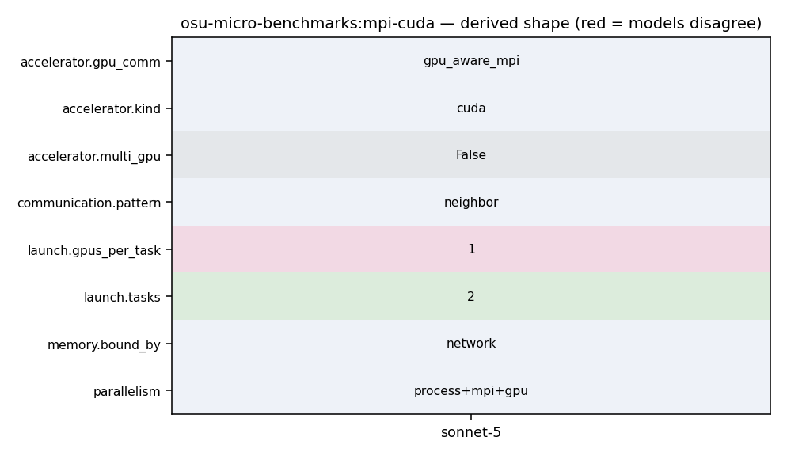

mpirun_rsh -np 2 -hostfile hostfile MV2_USE_CUDA=1 osu_bw D H
1043 In this run, the latency test allocates buffers at both rank 0 and rank 1 on 1044 the GPU devices. 1045 1046 - mpirun_rsh -np 2 -hostfile hostfile MV2_USE_CUDA=1 osu_bw D H 1047 - mpirun_rsh -np 2 -hostfile hostfile MV2_USE_ROCM=1 osu_bw D H 1048 1049 In this run, the bandwidth test allocates buffers at rank 0 on the GPU device 1050 and buffers at rank 1 on the host. 1051 1052 Setting GPU affinity 1053 --------------------
39 [NVCC="nvcc"], 40 [enable_cuda=no]) 41 42 AC_ARG_WITH([cuda], 43 [AS_HELP_STRING([--with-cuda=@<:@CUDA installation path@:>@], 44 [Provide path to CUDA installation]) 45 ], 46 [AS_CASE([$with_cuda], 47 [yes|no], [], 48 [CPPFLAGS="-I$with_cuda/include $CPPFLAGS" 49 LDFLAGS="-L$with_cuda/lib64 -Wl,-rpath=$with_cuda/lib64 -L$with_cuda/lib -Wl,-rpath=$with_cuda/lib $LDFLAGS" 50 NVCC="$with_cuda/bin/nvcc"]) 51 ]) 52 53 AC_ARG_WITH([cuda-include], 54 [AS_HELP_STRING([--with-cuda-include=@<:@CUDA include path@:>@], 55 [Provide path to CUDA include files]) 56 ], 57 [AS_CASE([$with_cuda_include], 58 [yes|no], [], 59 [CPPFLAGS="-I$with_cuda_include $CPPFLAGS"]) 60 ]) 61 62 AC_ARG_WITH([cuda-libpath],
45 46 po_ret = process_options(argc, argv); 47 omb_populate_mpi_type_list(mpi_type_list); 48 if (PO_OKAY == po_ret && NONE != options.accel) { 49 if (init_accel()) { 50 fprintf(stderr, "Error initializing device\n"); 51 exit(EXIT_FAILURE); 52 } 53 } 54 55 window_size = options.window_size; 56 if (options.buf_num == MULTIPLE) {
233 } 234 #endif /* #ifdef _ENABLE_CUDA_KERNEL_ */ 235 236 for (j = 0; j < window_size; j++) { 237 if (options.buf_num == SINGLE) { 238 MPI_CHECK(MPI_Isend(s_buf[0], num_elements, 239 omb_curr_datatype, 1, 100, 240 omb_comm, request + j)); 241 } else { 242 MPI_CHECK(MPI_Isend(s_buf[j], num_elements, 243 omb_curr_datatype, 1, 100, 244 omb_comm, request + j)); 245 } 246 } 247 MPI_CHECK(MPI_Waitall(window_size, request, reqstat)); 248 249 MPI_CHECK(MPI_Recv(r_buf[0], 1, MPI_CHAR, 1, 101, 250 omb_comm, &reqstat[0]));
1043 In this run, the latency test allocates buffers at both rank 0 and rank 1 on 1044 the GPU devices. 1045 1046 - mpirun_rsh -np 2 -hostfile hostfile MV2_USE_CUDA=1 osu_bw D H 1047 - mpirun_rsh -np 2 -hostfile hostfile MV2_USE_ROCM=1 osu_bw D H 1048 1049 In this run, the bandwidth test allocates buffers at rank 0 on the GPU device 1050 and buffers at rank 1 on the host. 1051 1052 Setting GPU affinity 1053 --------------------
113 break; 114 } 115 116 if (numprocs != 2) { 117 if (myid == 0) { 118 fprintf(stderr, "This test requires exactly two processes\n"); 119 } 120 121 omb_mpi_finalize(omb_init_h); 122 exit(EXIT_FAILURE); 123 } 124 125 #ifdef _ENABLE_CUDA_KERNEL_ 126 if (options.src == 'M' || options.dst == 'M') {
1043 In this run, the latency test allocates buffers at both rank 0 and rank 1 on 1044 the GPU devices. 1045 1046 - mpirun_rsh -np 2 -hostfile hostfile MV2_USE_CUDA=1 osu_bw D H 1047 - mpirun_rsh -np 2 -hostfile hostfile MV2_USE_ROCM=1 osu_bw D H 1048 1049 In this run, the bandwidth test allocates buffers at rank 0 on the GPU device 1050 and buffers at rank 1 on the host. 1051 1052 Setting GPU affinity 1053 --------------------
70 if (MPI_COMM_NULL == omb_comm) { 71 OMB_ERROR_EXIT("Cant create communicator"); 72 } 73 MPI_CHECK(MPI_Comm_rank(omb_comm, &myid)); 74 MPI_CHECK(MPI_Comm_size(omb_comm, &numprocs)); 75 76 omb_graph_options_init(&omb_graph_options); 77 if (0 == myid) { 78 switch (po_ret) { 79 case PO_CUDA_NOT_AVAIL: 80 fprintf(stderr, "CUDA support not enabled. Please recompile " 81 "benchmark with CUDA support.\n"); 82 break; 83 case PO_OPENACC_NOT_AVAIL: 84 fprintf(stderr, "OPENACC support not enabled. Please " 85 "recompile benchmark with OPENACC support.\n"); 86 break; 87 case PO_BAD_USAGE: 88 print_bad_usage_message(myid); 89 break; 90 case PO_HELP_MESSAGE: 91 print_help_message(myid); 92 break; 93 case PO_VERSION_MESSAGE: